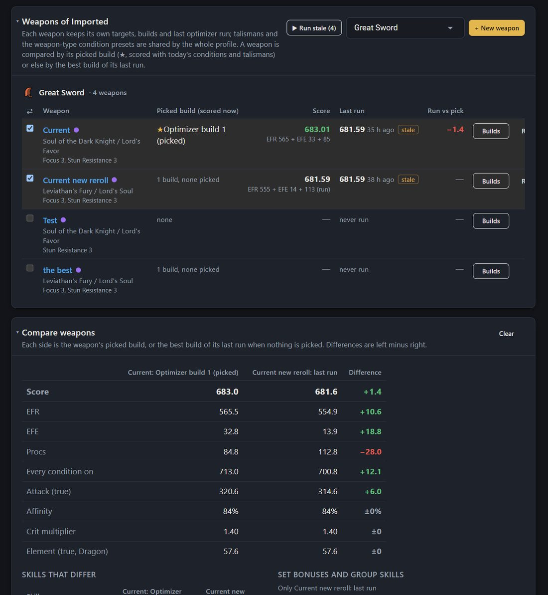
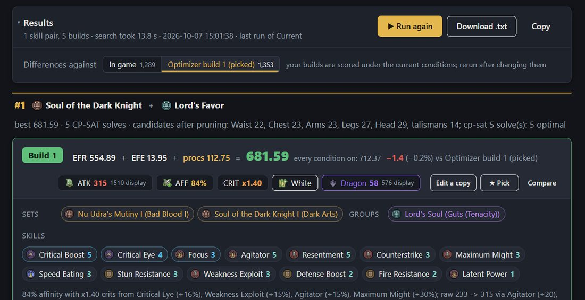
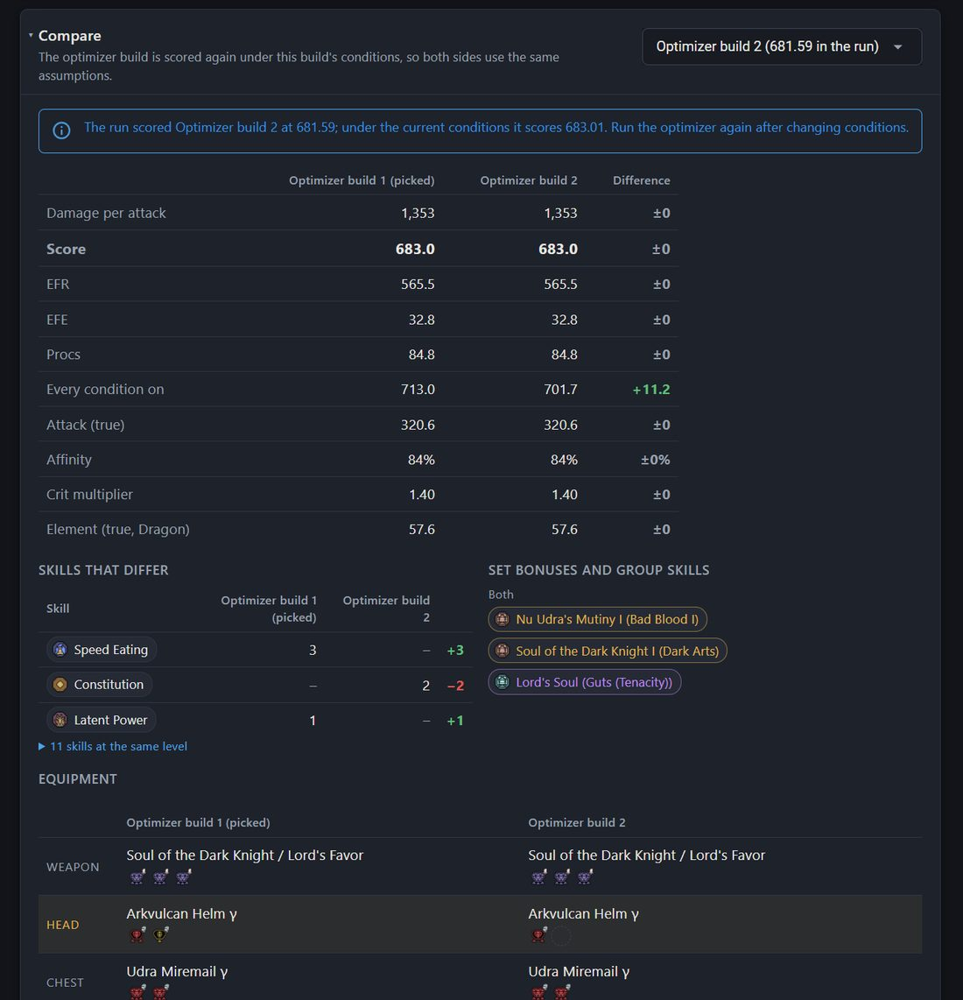
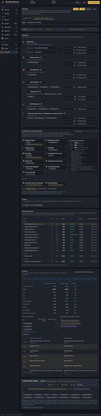
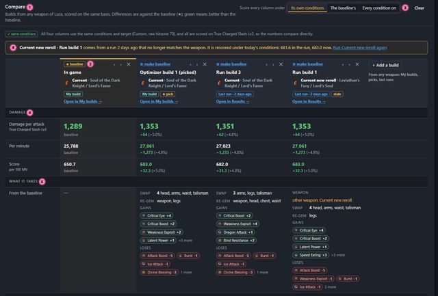
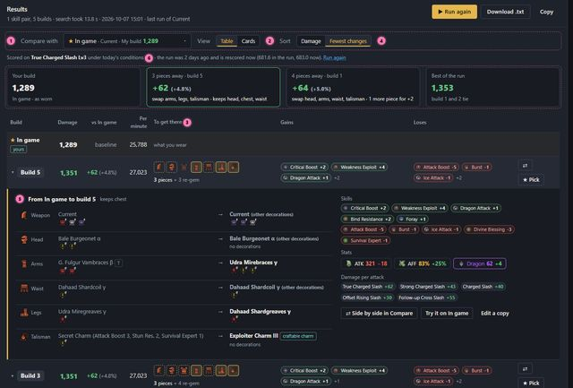
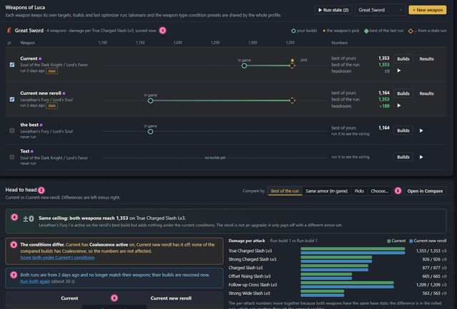
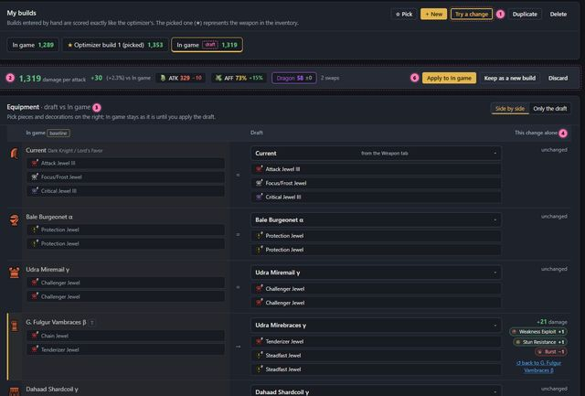

Two jobs: weapon A vs weapon B in one profile, and the build you wear vs a new one (from the optimizer or made up by hand). I went through both in the current app (main at b274ddc) with the Luca profile. Below are the problems I found, then four mockups. The mockups use your real builds, styled like the app, and their controls work.
Each issue was seen in the app; the screenshots are from the build of today's main.
The button opens My builds at the top. The comparison is the last section, about 4,300 px down, below the equipment editor, conditions, targets and the damage table.
Results' "Differences against" and the My builds comparison both use whichever My builds tab was last selected, so clicking a tab in My builds changes what Results measures against. In My builds the default reference is optimizer build 1, not In game. Results → Compare on build 2 compared it with "Optimizer build 1 (picked)", not with In game.
Each side is the weapon's pick (scored now) or else its last run. Current vs Current new reroll showed +1.4 for Current: that was its pick scored today against the reroll's stale run. Both actually reach the same 1,353. With your In game armor, though, Current is ahead by 125 (1,289 vs 1,164), and that isn't shown anywhere.
Current has "Coalescence active" on; Current new reroll has it off. Each side is scored under its own weapon's conditions, and the comparison doesn't mention the difference.
Equipment is two lists of names side by side, with the changed rows tinted. Nothing says "swap 3 pieces: arms, legs, talisman", which skills each swap brings, or which result needs the fewest new pieces.
Optimizer cards from an older run show score (681.59, "−1.4 vs …"), while the strip above them and My builds show damage (1,289 / 1,353).
You can compare two weapons (Inventory) or two builds of one weapon (My builds). You can't put In game on Current next to run build 3 of the reroll, or line up three candidates. The weapon's own stats (rolled pair, attack, slots) aren't in any comparison.
At 1600 px the inventory table is wider than its card. The "Results" button is cut off and the table scrolls sideways inside the card.

Inventory → Compare weapons today: "Current: Optimizer build 1 (picked)" vs "Current new reroll: last run", +1.4 (issues 3, 4, 8).

Results today: the strip shows damage (1,289 / 1,353), the card shows score and "−1.4 (−0.2%) vs Optimizer build 1 (picked)" (issues 2, 6).

The comparison at the bottom of My builds (issue 5).

The whole My builds page after clicking "Compare" on a result, at 1600 px (issue 1).
They can be built separately. 2 and 4 cover "the build you wear vs a new one", 3 covers "weapon A vs weapon B", and 1 is the general tool both could open into. Pink dots in each mockup are numbered design notes; untick "design notes" in the top bar to hide them.

Idea 1 · new tabUp to five builds from any weapon side by side, against a baseline you choose. All scored on one basis (own conditions, the baseline's, or every condition on). Shows what it takes to get from the baseline to each build, damage per attack, and skill and equipment grids. A compare tray on every tab collects the builds.

Idea 2 · Results tab"Compare with" becomes its own setting (default: the ★ pick). A table view gives one line per build: damage, gain over your build, which of the seven slots change, and skills gained and lost. Sort by fewest changes to find the cheapest upgrade. Clicking a row opens its swap list in place.

Idea 3 · InventoryOne damage axis per weapon type: your builds, the pick and the best of the last run on one line, so the headroom is visible. Tick two weapons for a head to head with a one-sentence verdict, the weapons' own stats, a choice of which build per side, and a check that flags different conditions or stale runs.

Idea 4 · My builds"Try a change" opens a draft of In game, side by side with it. Each swap shows what it alone is worth and can be undone, broken targets show up right away, and you apply, keep or discard the draft. A list of one-piece upgrades from the last run comes with each piece's gain.